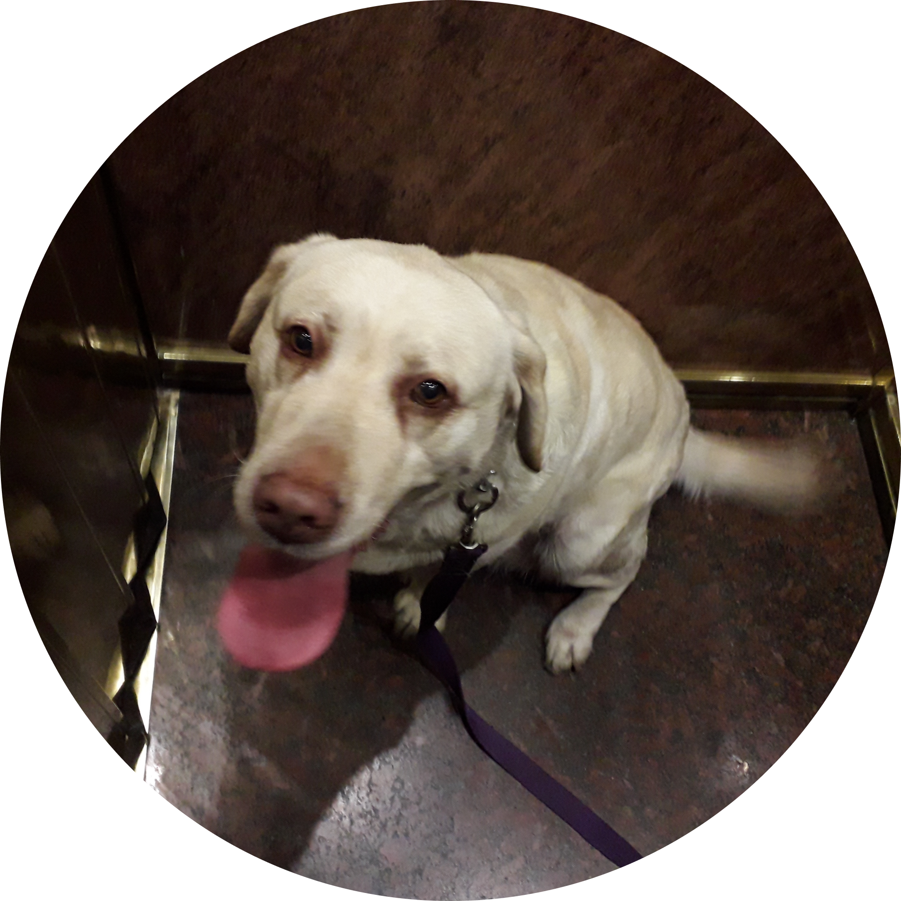
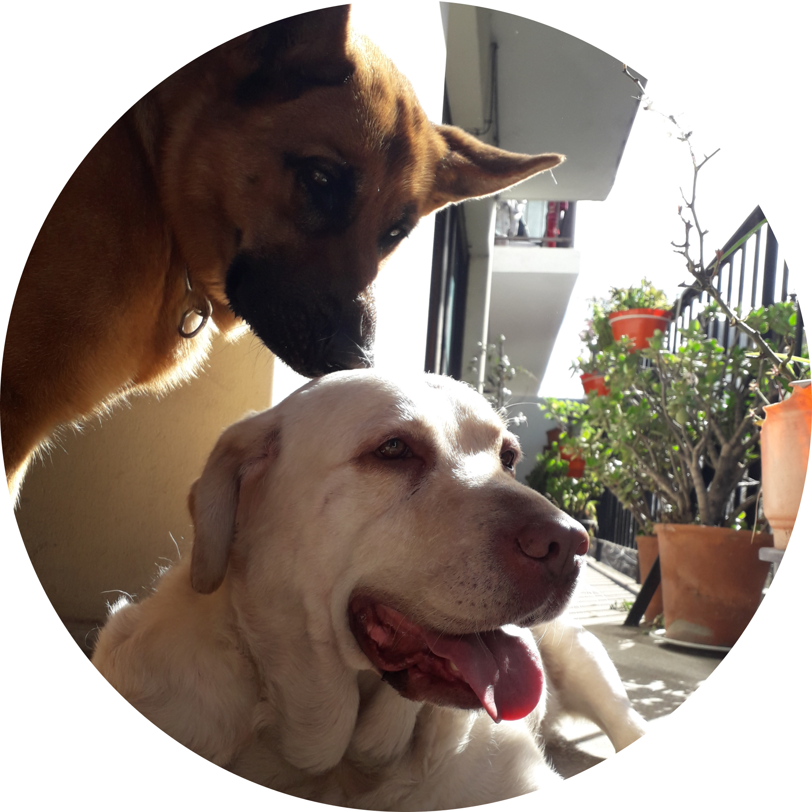

Visitamos la casa de la abuela
Me gusta mucho visitar a la mamá de mi dueña, es decir, mi abuela, porque suele regalarnos unos huesitos riquísimos.
Ella vive en un departamento y debemos viajar en ascensor porque está en el cuarto piso.
Otra de las cosas que nos divierte de esta visita es salir al balcón desde donde vemos todo lo que pasa en la calle.
La abuela nos tiene preparadas unas camitas con juguetes para pasar el día.
¡Que copada que es la abuela!